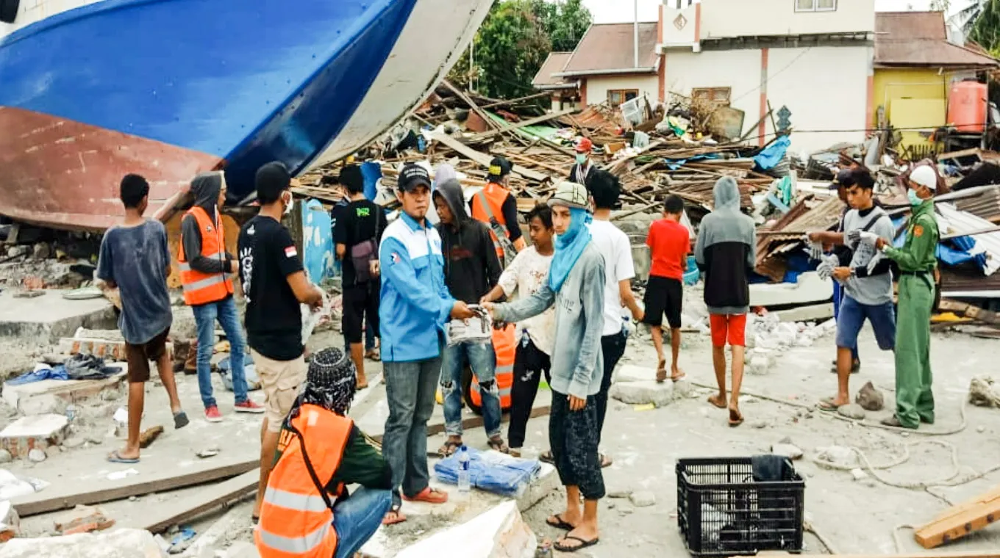
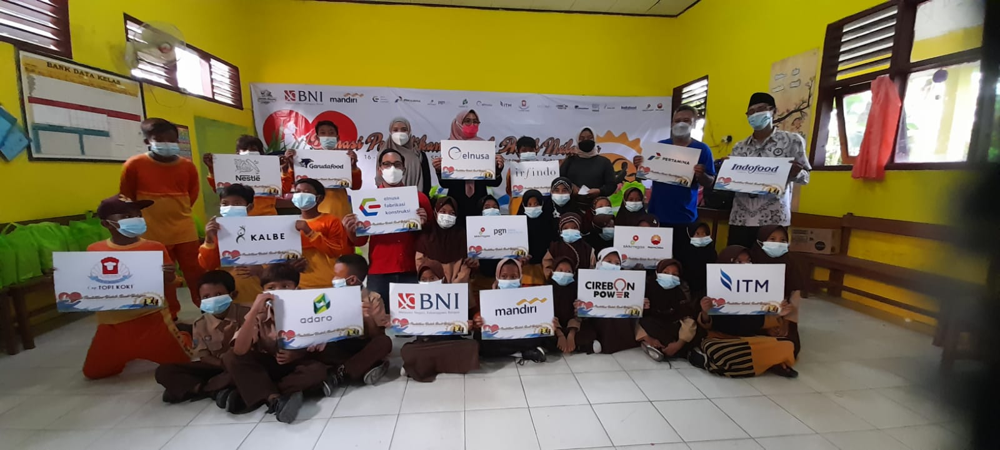
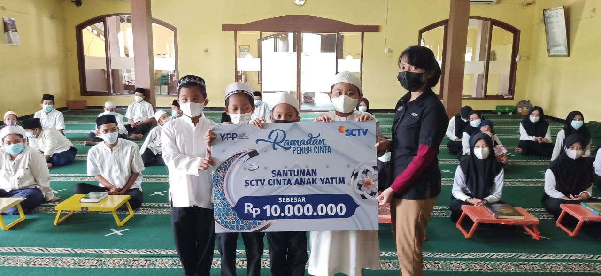
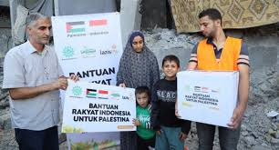
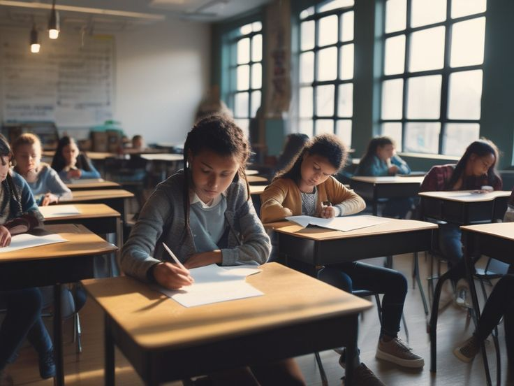
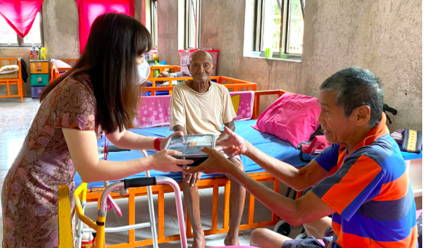
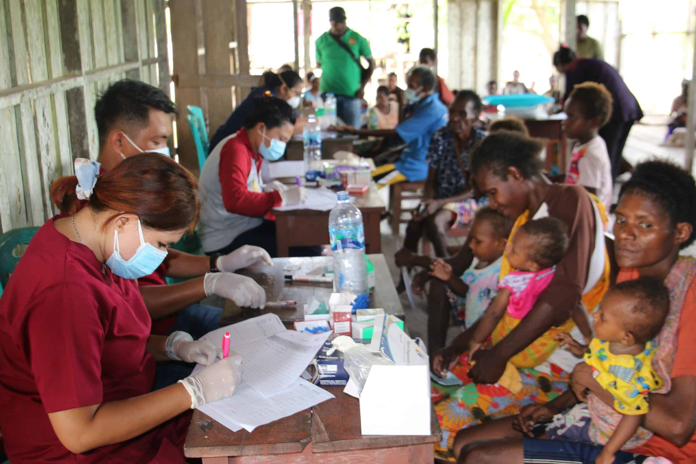

Donasi bantuan kepada warga Palu yang terkena dampak gempa bumi

Bantuan biaya pendidikan untuk anak nelayan di Kabupaten Bantul

Santunan anak yatim dan piatu dalam program cinta anak yatim dan piatu

Donasi peduli palestina

Berbagi santunan kepada lansia dhuafa di masa pandemi

Dukungan pendidikan di pelosok Indonesia.

Berbagi kebahagiaan bersama lansia menjelang Natal.

Medical check-up bersama warga Papua.